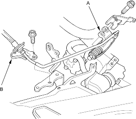
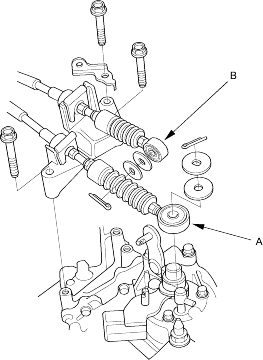
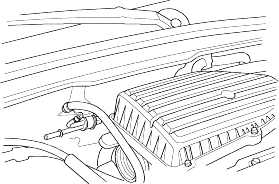

- Remove the clutch slave cylinder (A) and clutch line bracket mounting bolt (B) (M/T).

- Remove the shift cable (A) and select cable (B) (M/T).

- Relieve fuel pressure, refer to the '01 Civic Shop Manual on this CD (see page 11-130).
- Remove the evaporative emission (EVAP) canister hose.

- Remove the brake booster vacuum hose.